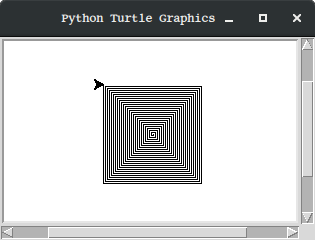
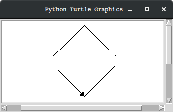

Juguem amb la tortuga¶
Python ens ofereix moltes eines interessants per a aprendre a programar. Una d’elles és el mòdul
turtle (tortuga)
Considera el següent exemple:
1 2 3 4 5 6 7 8 9 10 11 12 13 14 15 16 | """
turtle_square.py
Demostració de l'ús de Turtle dibuixant un quadrat
"""
import turtle # avisem a Python que volem fer servir el mòdul turtle
tortuga = turtle.Pen() # creem la tortuga
tortuga.color('blue') # canviem el color de la tortuga a blau
tortuga.forward(100) # la fem avançar 100 passes (pixels)
tortuga.left(90) # la fem girar 90 graus a l'esquerra
tortuga.forward(100)
tortuga.left(90)
tortuga.forward(100)
tortuga.left(90)
tortuga.forward(100)
input() # es manté la finestra amb el dibuix fins enter
|
En executar-ho, el programa ens obre una finestra amb el següent contingut:

Nota
En cas que aparegui un error d’importació com ara
Traceback (most recent call last):
File "/usr/lib/python3.5/tkinter/__init__.py", line 36, in <module>
import _tkinter
ImportError: No module named '_tkinter'
During handling of the above exception, another exception occurred:
Traceback (most recent call last):
File "_code/turtle_spiral.py", line 7, in <module>
import turtle
File "/usr/lib/python3.5/turtle.py", line 107, in <module>
import tkinter as TK
File "/usr/lib/python3.5/tkinter/__init__.py", line 38, in <module>
raise ImportError(str(msg) + ', please install the python3-tk package')
ImportError: No module named '_tkinter', please install the python3-tk package
En aquest cas, cal que instal·lis el packet python3-tk. Per
exemple amb:
$ sudo apt install python3-tk
Considera ara un altre example una miqueta més sofisticat:
1 2 3 4 5 6 7 8 9 10 11 12 | """
turtle_spiral.py
Demostració de l'ús de Turtle dibuixant una espiral quadrada
"""
import turtle
t = turtle.Pen() # ara la tortuga li diem simplement t
for passes in range(100): # passes tindrà els valors del 0 al 99
t.forward(passes) # fem avançar la tortuga tantes passes com digui passes
t.right(90) # girem a la dreta 90 graus
input()
|
En execurar-ho, aquest altre programa ens dibuixarà el següent:
Juguem¶
Practiquem una mica tot modificant els programes anteriors. Per suposat, no esperis entendre-ho tot, simplement passa-t’ho bé!
Algunes propostes
Pràctica 1. Quadrat a l’inrevés¶
Fes una nova versió del turtle_square.py que dibuixi el quadrat cap a la dreta en comptes de
l’esquerra
Pràctica 2. Quadrat d’un altre color¶
Fes una nova versió de turtle_square.py que dibuixi el quadrat d’un altre color (ex. vermell
red)
Pràctica 3. Un rombe¶
En comptes de dibuixar un quadrat, prova ara de dibuixar un rombe quadrat com el següent
Pista: en comptes de girar 90 graus, pots girar altres quantitats, per exemple 45.
Pràctica 4. Espiral més grossa¶
Modifica el codi de turtle_spiral.py de manera que l’espiral sigui més grossa.
Pista: amb el codi original, el costat més llarg té 100 passes (pixels). Posa-hi, per exemple, 1000!
Pràctica 5. Quadrat multicolor¶
Fes que el quadrat de turtle_square.py es dibuixi de la següent manera:
Pista: pots canviar el color tot just abans de fer que la tortuga camini. Els colors de l’exemple són blau, vermell, groc (yellow) i verd (green)
Pràctica 6. Espiral pirada¶
Canvia l’angle de gir de l’espiral de turtle_spiral.py de manera que, en comptes de 90 graus,
giri 75.
Experimenta amb altres angles si et ve de gust.
Pràctica 7. Més tortugues¶
No cal que ens quedem amb una única tortuga. Per exemple, el següent codi crea dues tortugues i les
anomena blava i vermella.
1 2 3 4 5 6 7 8 9 10 11 12 13 14 15 16 17 18 | """
turtle_redandblue.py
Demostració de l'ús de Turtle dibuixant dues espirals a l'hora
"""
import turtle
blava = turtle.Pen()
blava.color('blue')
vermella = turtle.Pen() # Una altra tortuga!
vermella.color('red')
vermella.left(45) # La tortuga vermella comença una mica abançada
for passes in range(100):
blava.right(90)
blava.forward(passes)
vermella.left(90)
vermella.forward(passes)
input()
|
Crea una nova versió del programa que faci servir tres tortugues. La nova pot ser de color verd i fer els angles de 75 graus en comptes de 90 i que, camini el doble de passes que les altres dues a cada gir.
Pista: el doble de passes és passes * 2
Pràctica 8. El teu repte¶
Ara que ja tens una idea, fes un repte. És a dir, codifica un programa que faci un dibuix amb el
mòdul turtle. Ensenya-li el resultat (no el codi) als companys i repta’ls per que l’intentin
aconseguir.